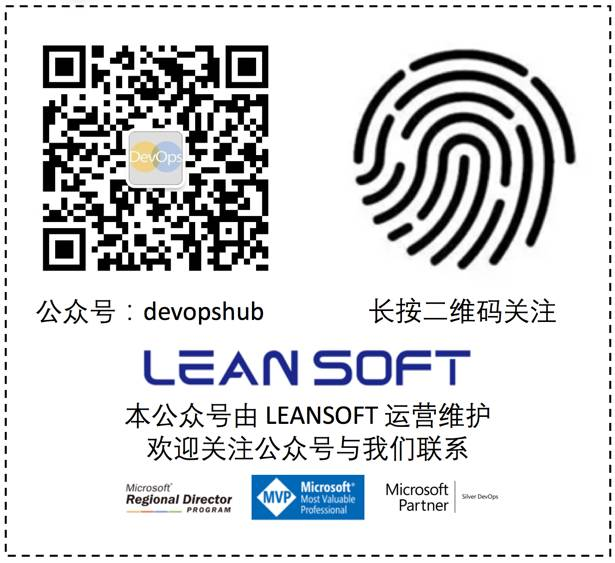

京东，作为国内最大的电子商务公司，是如何进行敏捷转型的呢？在转型过程中，都碰到过哪些坑，然后又用了哪些套路，得到了什么样的结果。
我将结合自己在京东进行敏捷转型的实践，告诉大家：敏捷的核心是什么？如何进行敏捷团队转型？团队转型需要注意什么？
京东到家，2014年作为京东一个内部项目，在移动互联网的大浪潮下从一开始就注定了不平凡。京东在2015年重点打造的战略级项目，其中就包含京东到家，即基于京东强大的物流体系，整合各类O2O（线上线下）服务，主要以提供生鲜和超市产品为主。
这次分享中，我主要会介绍在2016年中，给京东到家其中一个20+的团队进行敏捷转型的案例。这个团队主要是负责京东到家的商家入驻后台，内部会和京东到家的各个团队，如业务团队、app团队、结算团队等有交集，外部与京东（包含但不限于法务、财务、审计等团队）、入驻商家、入驻商家IT团队等对接。
前面简单介绍了这个团队的背景，那么这个团队的转型中我们都做了什么，为什么要做这些事情呢。下面和大家一一进行拆解。
取得信任，达成一致。
取得信任。在团队进行转型之前，一定需要得到所在团队经理或总监的认可与支持。这里的支持不是说口头说，我支持敏捷转型。而是真的会付诸行动。比如经理自身管理风格的转变，做事方法的变化等。
达成一致。达成一致需要多个层面都能统一认识。比如敏捷转型的阶段成果，比如团队的度量。一般阶段成果以3个月（季度）为单位呈现，其中每月有汇总演示。
度量（绩效管理）
达成一致的一个体现就是度量。下面稍微展开说一些关于敏捷度量的事情。更多的信息可以参考吴穹的“研发组织该如何设计绩效体系”。
绩效管理的目标
提高个人业绩表现
改善组织结果
决定加薪或升职
1. 提高个人业绩表现
绩效管理的目标之一就是帮助个人提高，或者换个说法，个人在公司里工作的主要动力之一也是可以自我学习、提升个人价值。
反观大部分公司的绩效管理是如何做的呢？
多数公司都是等到了年底的时候，直接经理进行一次性的打分（针对这一年的表现），然后根据这样的打分来决定个人一年的总体表现。这样做，对于提高个人表现有多大的帮助呢？总之，我认为作用不会很大。
2. 改善组织结果
很多组织会有一大堆考核组织（或者团队）的度量指标——多的甚至达到20+。这么多的指标究竟有哪些可以指导组织（或团队）的改进，有哪些有负面作用？
另外，这些考核组织（或者团队）的指标往往掌握在管理者手里（团队成员并不知道）。那么这样的绩效管理对于改善组织结果的作用有多大，是值得商榷的。
3. 用于加薪或升职
正如绩效管理第一个目标（提高个人绩效）中提到的，多数公司是每年（好一点的是半年）做一次绩效评估，然后根据这次评估的结果来决定一个人的加薪或者升迁。这样的话就会导致评估结果不能真实反映实际情况，举个例子，某员工小明，在11月底的代码提交中引出一次线上事故，而在前10个月中小明表现都非常优秀。在这个情况下，小明这一年的绩效评估结果会怎么样？很不幸，估计不会太好。原因如下：1. 尽管小明之前表现非常优秀，但这次犯了错误。2. 尤为关键的是这个错误恰好在绩效评估之前，管理者记忆犹新。
前面我们列举了绩效管理的目标，以及传统按年进行绩效评估的缺陷。那么在敏捷软件开发中，如何进行绩效管理呢？
度量指标的分类
在谈及绩效管理度量指标之前，我先对度量指标做一个粗略的分类。度量指标可以分为：
内部度量指标
外部度量指标
内部度量指标
内部度量指标，指的是度量组织（或团队）内部的指标（从内部看）。举个例子，比如个人或者团队的代码行数，单元测试覆盖率，缺陷数等等。
内部度量指标主要用于提高组织（团队或个人）的效率。
外部度量指标
外部度量指标，指的是度量组织（或团队）外部表现的指标（从外部看）。举个例子，比如ROI，客户满意度，NPS等。
外部指标主要用于指导组织（团队或个人）的方向，从而组织盈利或获得成功。
敏捷软件开发的度量指标
选择度量指标的时候，有几个因素需要着重考虑：
公司的目标是什么，这个度量指标和公司目标匹配吗？
组织（或团队）的改进方向或重点是什么？
这个目标的数据收集工作有多大？更新周期是多久？
最后，针对绩效管理度量，还有两个重要原则：
结果比过程重要
学习比失败重要
取得信任并达成一致后，还需要考虑的问题就是推敏捷，还是拉敏捷。
推敏捷指的是推广敏捷，即团队没有真正的动力去进行组织转型而是被推着走。比如听说敏捷能提高效率，听说敏捷能解决软件开发的很多问题，等等。这种情况下进行敏捷转型，结果多半是不理想的。
拉敏捷指的是团队有意愿进行敏捷转型（内驱力），而不是上述的推。
上面分析的是敏捷转型前判断团队的状态，是推还是拉。
那么推拉现象在软件开发当中是否存在呢？比如某个组件的责任，当没有明确到团队或个人的时候，大部分情况下，并不会有人主动去做（同时推）。非常少的情况下出现同时主动去做（同时拉）。
另外软件开发中，大部分的任务是推出去的。打比方，需求方做好需求调研之后，即写好需求文档后就推出去（可能并不是非常显性的）。推出去可能意味着需求方宣布，我们做好了需求调研，写好了需求文档（隐含着说“现在开始需求和我们没有关系”）。这样就做到了推出去了。任务与责任不在需求方了，这时需求方开始进行下一份任务。而实际上对于需求而言，仅仅推出去是不利于需求的完成。需要另外转变一下思路，即进行拉动式生产。
拉动式生产来自于丰田生产系统，是丰田非常成功的理念之一。即生产是根据客户需求进行拉动的。比如有客户付钱要买一辆车，这时产生一个购买信号，这个信号传递到汽车工厂，在汽车工厂的最下游（比如装配车间，不一定准确，这里只是做个简单介绍）就产生一个装配一辆车（是非常具体的什么型号，什么颜色等）的信号。这个信号继续向上游传递（比如车体框架、引擎、轮胎等不同车间或供应商）后，会陆续带动上游的生产。拉动式生产可以保持较小的库存（积压），另外每个环节由最终的结果（客户购买）来驱动，很容易达成一致。而如果是推动式生产呢？每个环节只关心我的任务是否完成或达标，而不是根据生产信号来生产。这样势必会造成更多的浪费（库存）。
那么对于软件开发，这种拉动式生产是否可以应用呢？很显然是可以的。那么如何应用实施呢。让我们看看如何进行产品梳理。
前期准备好之后，就需要和产品经理（或产品负责人）以及团队一起来梳理当前的产品需求。梳理产品需求我最常用的工具有用户故事地图（还有其他工具，比如影响地图、客户体验地图等，限于篇幅这里就不一一描述，有兴趣的小伙伴可以自行查找）。这里着重描述一下用户故事地图。
什么是用户故事地图
用户故事地图是一门在需求拆分过程中保持全景图的技术。 -- Martin Fowler
用户故事地图可以使我们专注于用户和用户体验，产生更好的沟通效果，最终做出更好的产品。 -- Jeff Patton
用户故事地图是以用户的视角来讲故事，然后团队整体达成统一的理解。--BoB Jiang
为什么用户故事地图有效
用户故事地图在产品梳理（需求梳理）方面为什么很有效，这有如下几个原因：
整个过程围绕着用户视角，以用户的身份讲故事。
团队在这个过程中达成一致（隐含信息）。
故事地图是二维的，即横向是时间（或完成任务的顺序），纵向是任务的重要程度；完胜一维的产品列表，只有排序。
如何使用用户故事地图
这里有一个简单的步骤介绍：
团队每个人用便签写下自己对于产品的理解，如需要完成哪些任务。这个环节不需要讨论，每个人自己写。
每人把自己的便签按照完成任务的顺序贴在一面大墙，或者地板上。
所有人的任务，整合到一起。相同或类似的分成一组活动，并给该组活动起名。
找出最简版本需要完成的任务
注意：如果步骤1、2中大家写出不同用户的任务，可以根据用户做成不同的地图。比如对于一个电子商务网站，可能的用户有最终消费者，运营人员，系统管理员等。
最后推荐大家阅读《用户故事地图》，以及参考如下两篇博文：
用户故事地图之初体验
创建用户故事地图的8个步骤
到这里，我们已经为团队准备好了要工作的内容。接下来就是如何交付。
我们采用的敏捷转型是完全遵循Scrum框架的。具体Scrum框架的内容可以参考Scrum指南。由于业务方需求和客户的需求变化非常快，我们选择一周为迭代周期。具体的活动包含：
计划会
每日站会
评审会
回顾会
计划会
计划会主要分为两部分：做什么和如何做。
团队一起决定他们要做什么,以及如何构建、测试承诺的工作。在计划会议过程中,产品负责人的重要职责之一是解释澄清模糊的需求。最后的产出为迭代目标和迭代列表。
每日站会
每天的 15 分钟站立会议。
团队一起回答三个问题:
从上一次例会到现在我完成了什么(重点在于是否完成承诺,以及暴露风险)?
从现在到下一次例会我计划完成什么(重点在于承诺)?
有什么风险或障碍(尽早暴露问题风险)?
评审会
在评审会上,产品负责人接受或拒绝团队完成的用户故事。(注:产品负责人应该在平时的工作中进行评审,而不只在评审会上进行这些工作)。
回顾会
团队一起检视和调整他们的工作方法,以达到成熟高效的自组织团队。
上述的活动看起来简单，但在实践过程中会出现各种意外的情况。这里就需要有经验的人帮忙进行辅导。有关每个会议更详细的内容，可以参考Scrum指南。
这里给大家一些警示，也是在这次敏捷转型当中踩过的一些坑。
前面那个案例，到后来并没有带来很多客户价值的提升。最多的结果是研发内部的透明，以及与业务方沟通的顺畅。但最终供应商入驻，仍然是那么长时间。所以后面并没有过多描述案例，而我希望大家能够引以为戒，在进行敏捷转型的时候，一定要看着客户价值。不能给客户带来价值的敏捷转型都是耍流氓。
回归到案例中，客户价值可能体现在：
供应商入驻时间的缩短。
供应商需求的响应时间。
供应商满意度。
业务方（内部客户）需求响应时间（这一点做到了）。
业务方满意度（这一点做到了）。
回顾前面讲述的内容，真正重要的就如下几点：
取得信任，达成一致
以客户价值为核心
产品需求切入
迭代周期
Scrum框架
最后，一定是最重要的！
Scrum不是万能的！
Scrum不是万能的！
Scrum不是万能的！
而Scrum只是暴露问题。暴露问题之后需要团队一起努力奋斗去解决问题。
本文很多的做法和Scrum没有太大关系，而是就暴露出的问题采取具体措施。

内容转载自公众号